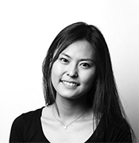

-The Speakers-
Akie Abe
Akie Abe was born in Tokyo in 1962. She graduated from the Sacred Heart Women’s College and started her career at Dentsu Inc. In 1987, she married present Prime Minister Abe Shinzo. She then studied Social Design Studies at Rikkyou University. She provided aid for schools in Myanmar. She owns an izakaya restaurant that uses only organic products and also participates in farm management. In 2014 she opened a school that focuses on women’s advancement in society called “the school of UZU”.
1962年東京生まれ。聖心女子専門学校卒業。電通勤務を経て1987年、第97代内閣総理大臣・安倍晋三氏と結婚。その後立教大学大学院21世紀社会デザイン研究科を修了。ライフワークとしてミャンマーの学校支援、無農薬有機の食材を使った居酒屋経営、農場運営など教育と食の振興に力を入れている。2014年からは女性の社会進出を支援する講座型スクール「UZUの学校」を開校、多方面に活躍の場を広げている。

Sachin Shah
Sachin N. Shah received a B.S. degree in electrical engineering and a master’s degree in technology and business management from Stevens Institute of Technology in New Jersey. Shah is Executive Vice President for MetLife. He is the Chairman, President and Chief Executive Officer of MetLife Insurance K.K. He is also a member of the Board of Directors and Representative Statutory Executive Officer of MetLife Insurance K.K. Before his assignments in Japan, Shah was the global leader for the integration of Alico into MetLife until closing of the transaction in November 2010. Shah serves on the board of the US Japan Business Council and on the Board of Governors for the American Chamber of Commerce in Japan.
Kumi Sato
Kumi Sato has been the President and CEO of COSMO since 1987 and is often attributed for bringing an international focus to the company. Despite the male-dominated Japanese corporate world she has been recognized as an accomplished and admirable leader; she was awarded Harvard Business School Club of Japan’s “Business Stateswoman of the Year” in 2012 and won the Asia-Pacific SABRE “Outstanding Individual Achievement” Award in 2011. A proponent of workplace diversification, she is on the American Chamber of Commerce in Japan’s (ACCJ) Labor Diversification Task Force. Sato has written two books: Aisareru Kaisha no Joken (2007) and Communication Leadership (2012).

Miki Saito
Miki Saito, born in Japan 1985, is a contemporary artist based in Tokyo. Miki studied design at KIDI Parsons in Kanazawa (associated with Parsons New York), and later transferred to Art Center College of Design in California where she earned a BFA in Fine Arts. Her work has been exhibited globally at venues such as the Art Merge Lab in Los Angeles, Stephan Romano Gallery in New York, The National Art Center Tokyo, ANA InterContinental Tokyo, and Wada Garou Tokyo. Her artworks are also included in the collection of the JAPigozzi Foundation.
Renge Jibu
Renge Jibu started her career at Nikkei Business Publications and worked as a journalist at various business magazines in Japan. In 2006, she was a Fulbright Visiting Scholar at the Centre for the Education of Women at the University of Michigan. During this time she conducted research about American dual-career couples with children. She has since written two books on the topic; "Kasegu Tsuma • Sodateru Otto ― Fuufu no Senryaku Teki Yakuwari Koukan” and “Futari no Kosodate Ruulu.” In 2013, she was a researcher at the Showa Women’s University’s Modern Business Research Institute, and currently she is Vice President at Toshima & Associates.
Kazue Kurihara
Kazue Kurihara earned her Ph.D. in Chemistry from the University of Tokyo in 1979. Kurihara has worked at various organizations such as University of Tokyo, Texas A&M University, Clarkson University, and Kyoto University. She was also an associate professor at Nagoya University in 1992 and a professor at Tohoku University in 1997. She was a council member of the Science Council of Japan for 2005 -2014 and the chairperson of its chemistry committee for 2011 - 2014. In 2013, she won the International Union of Pure and Applied Chemistry Distinguished Women in Chemistry or Chemical Engineering award.
Asako Osaki
After graduating from Sophia University, Osaki Asako pursued a master’s degree at Columbia University in International Relations, specifically International Human rights. She started her career at the United Nations Development Programme (UNDP) in New York City, where she was a specialist in the Development Policy Bureau's gender and women’s empowerment sectors. She worked on policymaking surrounding poverty reduction, democratic governance, and conflict/disaster area reconstruction, and was also involved in contributing to the United Nations Millennium Development goals. Osaki is currently an Associate Professor at Kwansei Gakuin University, a specialist at Gender Action Platform, director of the International Women’s Club Japan, and director of public interest at Plan Japan.
Machiko Osawa
Professor of Economics at Japan Women’s University and Director of the Research Institute for Women and Careers. Served on Advisory Boards of Ministry of Education, Culture, Sports, Science, and Technology, Ministry of Health, Welfare and Labor, Prime Minister’s Gender Equality Office, and Ministry of Economy Trade and Industry. Conducting research on working women and family formation in Japan from international perspectives. Authors of many books and articles, most recently What’s Holding Japanese women back, Toyo Keizai Shinposya, 2015.
Mariko Bando
Currently president of Showa Women’s University, Mariko Bando was born in 1946 in rural Toyama. After graduating from the University of Tokyo she started her career as a bureaucrat. In 1969, Bando became the first woman to enter the Prime Minister’s Office as a career bureaucrat. She then became vice governor of Saitama Prefecture and in 1998 she was appointed consul general of Japan in Brisbane, Australia. In 2001, she was the director general of the Bureau of Gender Equality in then PM Junichiro Koizumi’s cabinet. In 2004, Bando was a fellow at Harvard University’s Kennedy School of Government’s Women and Public Policy Program. She was also the director of the Japan National Committee of UNIFEM (United Nations Development Fund for Women). During her entire career she has written more than 30 books, such as “The Dignity of a Woman”.